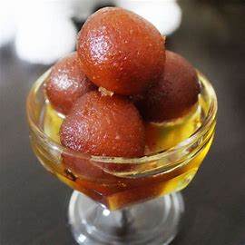

Gulab Jamun
Ingredients
- Skimmed milk powder
- Ghee
- Coarse semolina (sooji)
- Green cardamom
Procedure
- Mix mashed khoya with chenna, soda bicarbonate, maida, elaichi powder and water to make a dough.
- Make multiple balls from the dough of the jamun size.
- Mix sugar with equal water to make a sugar syrup and keep aside on low heat.
- Heat the desi ghee in a pan.
- Deep fry the jamun balls in desi ghee on low heat until golden.

Kaju Barfi
Ingredients
- 250 gms cashew nutsr
- 250 gms sugar
- 240 gms milk
- A few silver leaves - for decoration (optional)
Procedure
- Grind and sieve cashews
- Mix cashew flour and milk powder
- Make sugar syrup – simmer on medium for 4.5-5 minutes
- Add in cashew/milk powder blend in parts, while mixing continuously
- Cook about 4.5-5 minutes on low until mixture thickens and holds shape for a few seconds like above when spread.